The film as 15 bars of 4/4 at 120 BPM. Each tick is a beat (0.5 s); flamingo marks are the major hits read from the cue sheet.
Every significant moment lives once, in a single object called CUE. The picture reads it to decide when a letter lands, and the score reads the same values to decide when a kick fires. If I move the slam from 12.0 s to 12.25 s, the camera punch, the flash, the scale spring, the kick, the snare, the clap and the crash all move together. Sync cannot drift because there is nothing to drift apart.
The same idea drives the camera: a list of [time, strength] impacts feeds a decaying shake and a zoom punch, so the frame physically reacts to the loudest hits.
120 BPM gives a beat of exactly 0.5 s, an eighth of 0.25 s and a sixteenth of 0.125 s. At 60 fps those are 30, 15 and 7.5 frames. {{ONGRID}} of the {{CUES}} major cues sit exactly on it. The exceptions are deliberate: the opening pop (0.15 s) and the dive into the o (17.35 s) are timed by feel, and the bounce fills subdivide to 1/32 and 1/64 notes, as real drum fills do. That is why the piece feels musical even when nothing is on screen but a dot.
// src/core.js · the single source of truth const CUE = { dotPop: 0.15, launch: 0.45, bounces: [1.0, 1.5, 1.75, 1.875, 1.9375], split1: 2.25, split2: 2.5, burst: 2.75, weLock: 4.0, make: [6.5, 7.0, 7.5, 8.0], hop: 8.5, hopLand: 9.0, motion: 10.0, slam: 12.0, build: 14.0, collapse: 15.75, without: 16.0, ping: 16.5, portal: 17.35, code: 18.0, locks: [19.0, 19.25, 19.5, 19.75], slash: 20.0, fall: 20.25, straighten: 21.5, final: [22.0, 22.5, 23.0, 23.5, 24.0], finalBounces: [24.5, 25.0, 25.25, 25.375, 25.4375], reflow: 26.0, asterisk: 27.25, typeStart: 27.6, fadeOut: 29.0, blink: 29.75, }; // picture: const d = dropDot(t) → reads CUE.bounces // sound: bounceKit(CUE.bounces) → kicks on the same values
Nothing in the film is simulated step by step. Each element’s position is a closed-form function of t. That is what makes the timeline scrubbable in the browser, lets the offline renderer jump to any frame, and makes true motion blur possible: to blur a frame I sample 24 instants inside the shutter and average them.
Randomness is deterministic too. Particle angles, glitch slices and code-chatter blips come from an integer hash of an index, so frame 1,206 is identical on every render.
function spring(dt, zeta = 0.4, f = 2.2) { const w = 2 * PI * f; const wd = w * sqrt(1 - zeta * zeta); return 1 - exp(-zeta * w * dt) * (cos(wd * dt) + (zeta * w / wd) * sin(wd * dt)); }
An under-damped harmonic oscillator solved exactly. It gives overshoot and settle (follow-through) without any state. Used for the MOTION slam, the wave amplitude, the bracket slide-ins and the asterisk’s arms, each with its own damping and frequency.
v0 = (y1 - y0) / T - g * T / 2 y(t) = y0 + v0 * (t - t0) + g * (t - t0)² / 2
Instead of simulating gravity I specify where the dot must be and when, and solve for the launch velocity. Gravity stays physically constant (6,400 px/s²) while every landing hits its cue exactly.
Bounce intervals halve: 0.5, 0.25, 0.125, 0.0625 s. Under constant gravity a bounce’s height is gT²/8, so heights quarter: 200, 50, 12.5, 3 px. The picture is physically right, and the sound is a textbook accelerating fill. The kick for each landing gets quieter and slightly higher-pitched, like a real ball on a real floor.
Stretch comes from speed (1 + min(0.45, |v|/5200)) and squash from impact (a decaying cosine). Width is always the inverse of height, so the dot never gains or loses mass. The shape is anchored at its contact point so it squashes into the floor rather than floating above it. During the hop between A and E, the stretch is rotated to follow the velocity vector along the arc.
MOTION’s letters leave five flamingo echoes sampled 28 ms apart. They trace the letters’ arcs and fade as the letters decelerate, so the trail length is itself a speedometer.
0.90 s falling, stretched along its velocity · 1.00 s impact: squash, ripple, ground line
Picture. A dot pops in on a back ease (0.15 s), crouches (anticipation, 0.30–0.45 s), hops, and falls under gravity to land exactly on beat 3. Each landing throws an elliptical ripple across an implied floor, and the first draws a hairline horizon that fades out.
Sound. A G6 blip for the pop, a rising sine for the jump, then five kicks with clacks on the landings: 1.0, 1.5, 1.75, 1.875, 1.9375 s. The ball plays its own fill into the downbeat of bar 2.
TimingAnticipationSlow in/outSquash & stretch
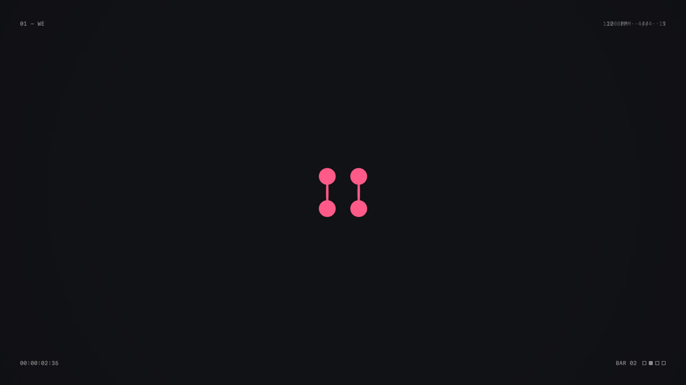
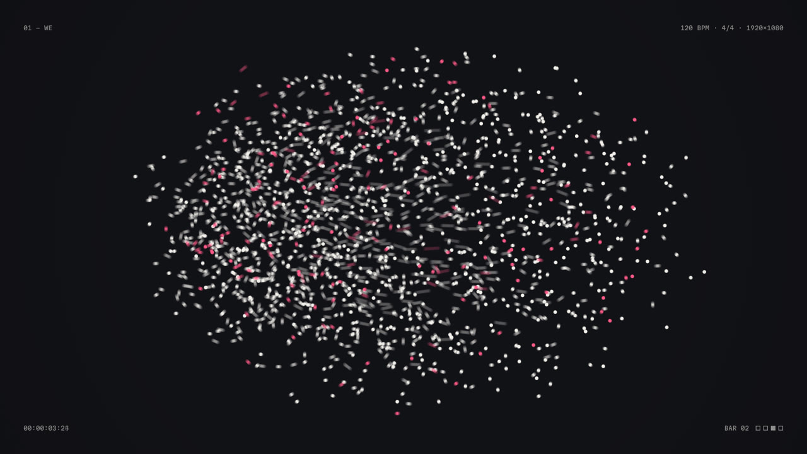
2.60 s mitosis, four cells · 3.40 s swarm curving home, left to right
Picture. The dot divides on the beat, 1 → 2 → 4, necks pinching like cells. At 2.75 s it bursts into {{PARTICLES}} particles. Their targets were sampled from the word WE rasterised offscreen. Each particle flies out on a swirling elliptical orbit, then homes in along an arc, launched in a left-to-right stagger so the word appears to write itself. At 4.0 s the dots flash into solid type with a flamingo outline echo, then the camera pushes in slowly. The letters crouch and leave upward while a liquid chalk wipe rises.
Sound. C5 and G5 plucks on the splits, a burst, 26 scattered pentatonic blips (one per cluster of particles), a riser, then kick, snare, clap and crash on the lock. The groove starts here.
Secondary actionArcsStaggerStaging
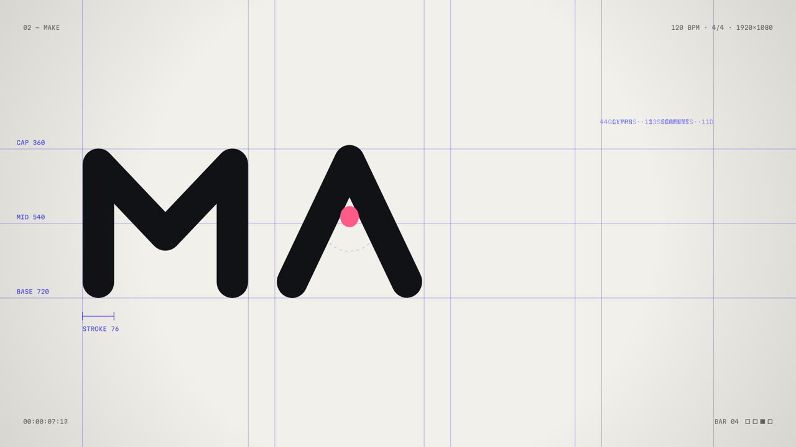
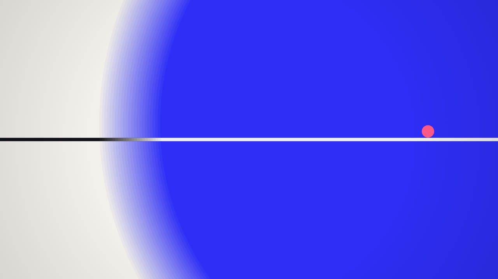
7.30 s the dot wedged in the A’s counter · 9.85 s ultramarine iris opening from the dot
Picture. A blueprint grid draws out from the centre, labelled like a type specimen (CAP 360, MID 540, BASE 720, STROKE 76). Then M, A, K and E are drawn one per beat as continuous pen strokes. The dot drops into the A where the crossbar should be. Its resting height was solved so it wedges exactly between the A’s inner edges. At 8.5 s it crouches and hops over the K, clearing it by about a pixel, onto the tip of E’s middle bar. That bar then shoots out to become the horizon while everything else retracts, and an ultramarine iris opens from the dot.
Sound. Ticking hats as the grid draws, woodblock clacks tuned upward per glyph, a two-part clink for the dot, a sine hop and boop, a zip for the line and a riser into the cut.
StagingRhythmAppealMatch cut
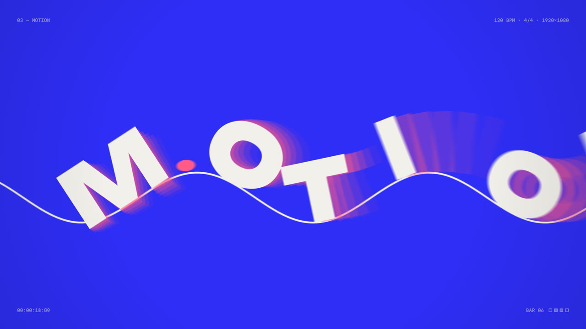
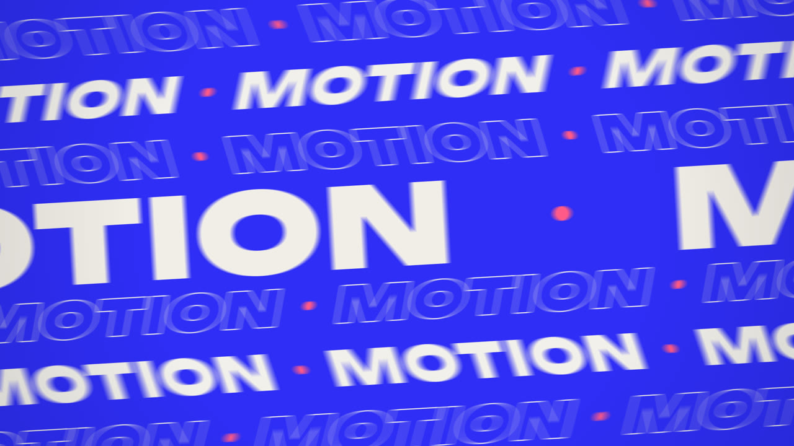
11.00 s letters riding the wave with echoes · 15.40 s the build: tilt, zoom, shear, flash
Picture. The horizon comes alive as a travelling sine wave; the dot surfs it leftward and hops out. The letters of MOTION follow, sitting on the wave and rotating to its tangent. They land on consecutive sixteenths, then the wave flattens and they settle one after another. At 12.0 s: the slam. Six marquee rows open like blinds and scroll in alternating directions, with speed spiking on every kick. From 14.0 s the speed doubles every half-second while the camera tilts and pushes in and the rows shear with their own velocity. At 15.75 s everything decelerates like tape and collapses to a single line.
Sound. Impact and crash, full groove, a C–D–E–G–A–C arpeggio as the letters land, the slam, a snare roll from 8ths to 16ths to 32nds under a riser, and a tape-stop pitch dive into silence.
Path animationOverlapping actionRepetitionExaggeration
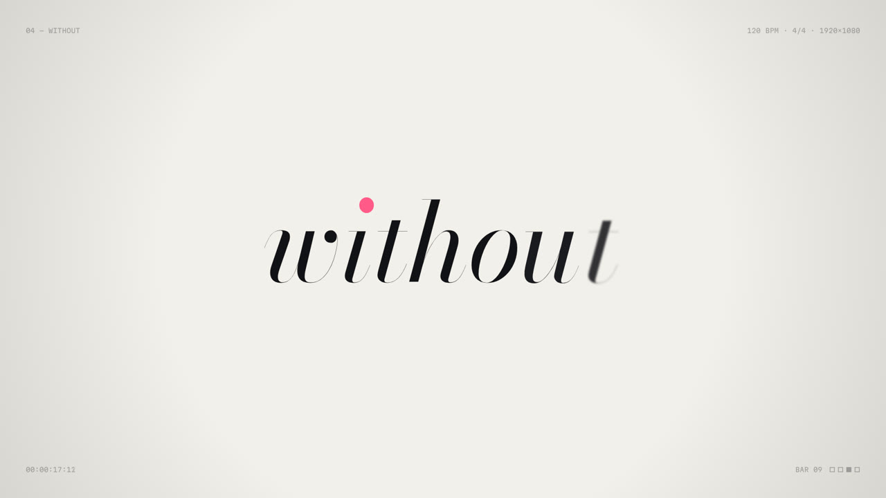
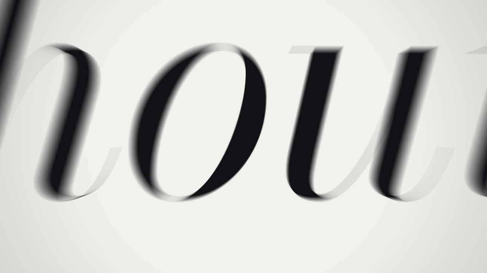
17.20 s the dot is the tittle of the i · 17.80 s diving into the ink of the o
Picture. A hard cut to chalk and stillness. The line from MOTION switches off like an old television. “without” resolves letter by letter from blur, with its tracking tightening. The i’s own tittle is masked out and the dot drops in to take its place. To find the tittle, the renderer rasterises the glyph and flood-fills its top-most blob. Then the camera dives into the o. The zoom target is the deepest point inside the glyph’s ink, found with a distance transform, so the stroke fills the screen and becomes the next scene’s ground.
Sound. The drums drop out completely. There is one glass ping (E6 with inharmonic partials), some air, a tiny tick as the dot lands, and a riser into the cut. Two seconds of near-silence make the next hit feel twice as loud.
ContrastSilence as designTransition through form
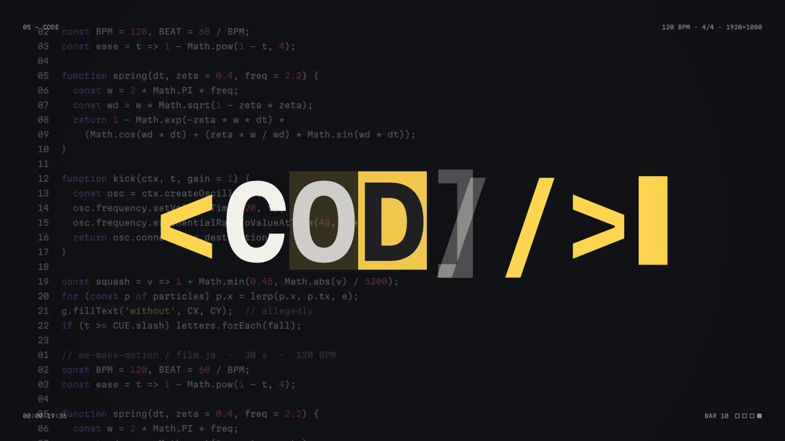
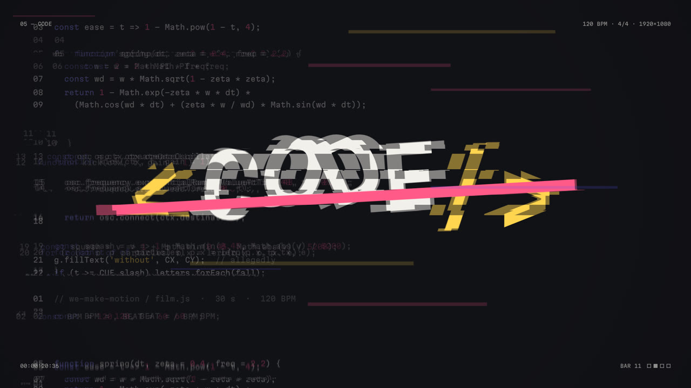
19.60 s decoding, selection highlight · 20.60 s struck through and falling
Picture. The backdrop is a syntax-highlighted editor showing excerpts of the film’s own source, including g.fillText('without', CX, CY); // allegedly. The brackets spring in, the letters scramble and lock on consecutive eighths, each flashing a butter selection highlight, and a caret blinks on the beat. At 20.0 s a flamingo bar slashes through. Every glyph, and then every line of code, falls with its own spin. The bar hangs in mid-air for a beat, in the cartoon tradition, before straightening and exploding into a two-layer wipe.
Sound. Boom and glitch burst, bit-crushed hats, square-wave chatter that thins as letters lock, four rising locks, a slash, seven falling bloops and two whooshes for the wipe.
RhythmImpactGravityComic timingLayered wipe
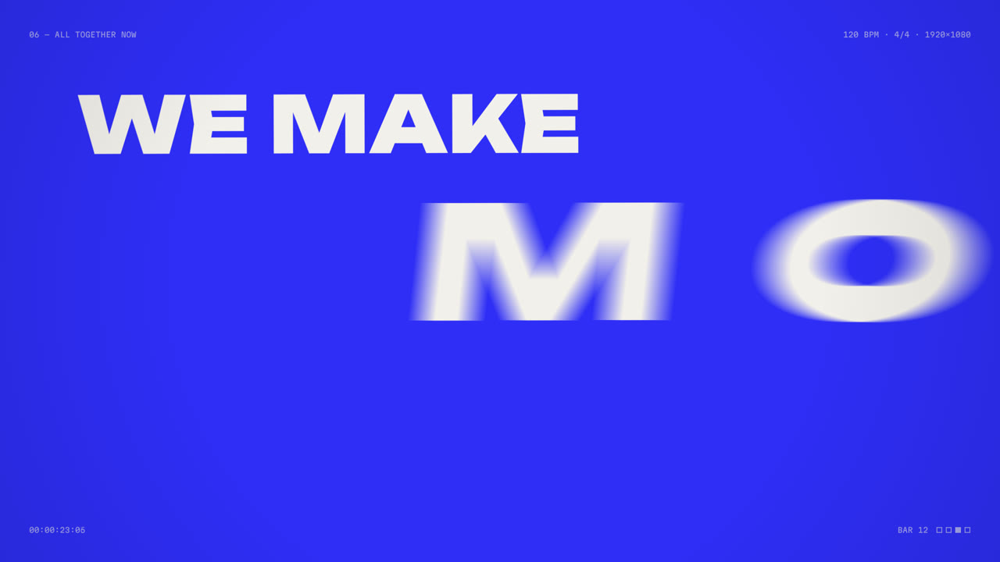
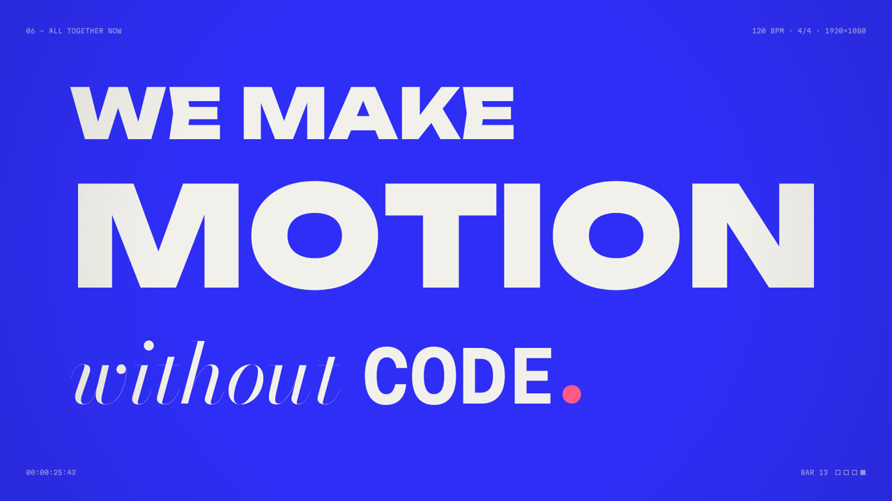
23.10 s MOTION slams in, stretched and sheared by its own speed · 25.80 s the lockup
Picture. A Swiss-style stacked lockup, and each word gets its own verb on its own beat. WE and MAKE rise through masks, letter by letter. MOTION slides in from off-screen, stretched and sheared in proportion to its speed. without whispers in from blur. CODE decodes. Then the dot drops from the top of frame and bounces into place as the full stop, with the same physics and timings as the opening.
Sound. Five hits: two snares with clacks, a crash and impact for MOTION, the glass ping again for without, a glitch for CODE. Then the opening drum fill plays again, note for note, as the dot bounces.
HierarchyCallback
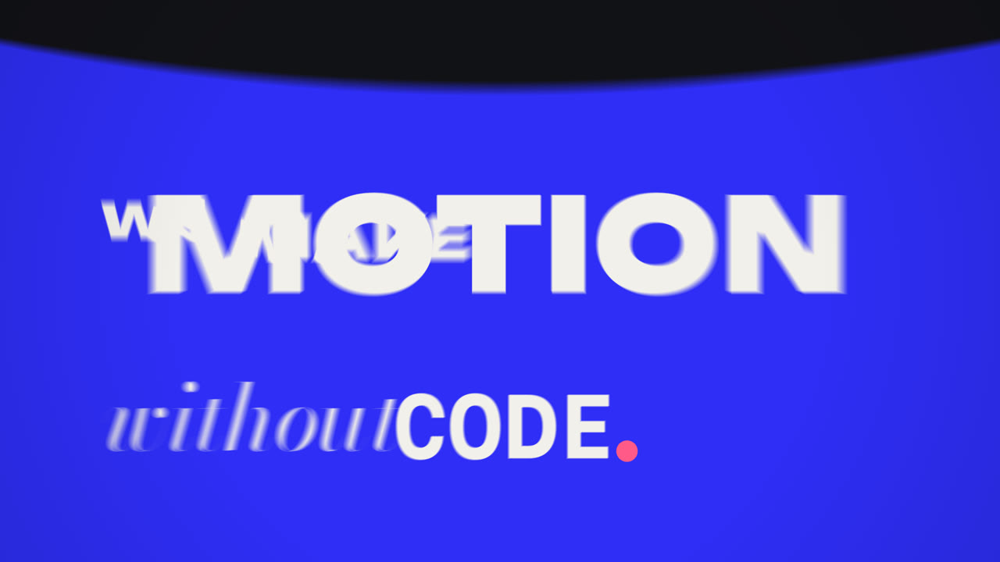
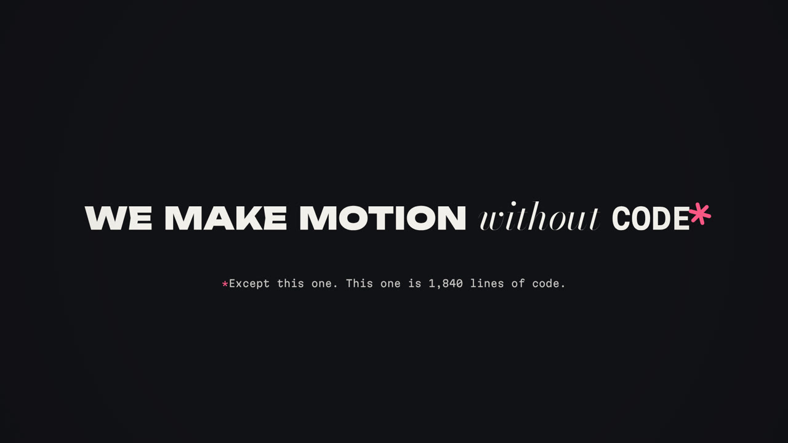
26.40 s FLIP reflow under a falling ink curtain · 28.80 s the asterisk and its footnote
Picture. Every word travels from its lockup position and size to its place in a single-line sentence, on alternating arcs with a small back-ease pull, while a liquid ink curtain falls. At 27.25 s the full stop rises to superscript and grows six arms: it is now an asterisk. The footnote types itself at 48 characters a second: “*Except this one. This one is {{LINES}} lines of code.” Then everything fades, and the asterisk drifts to centre, retracts its arms, turns back into the opening dot and blinks out.
Sound. A reflow whoosh, a sproing (a frequency-modulated sine) for the asterisk, one tick per typed character, a soft final kick with a low glass tone, and the opening blip to close.
FLIP reflowMorphBookend
| Voice | Recipe | Used for |
|---|---|---|
| Kick | Sine swept 170 → 46 Hz in 90 ms, exponential decay, 2.5 kHz noise click | Beats, bounces (pitch rises per bounce) |
| Snare | Band-passed noise at 1.9 kHz + triangle 200 → 150 Hz body | Backbeat, the build’s roll |
| Clap | Three noise bursts 11 ms apart through a 1.2 kHz band-pass, then a tail | Locks, slam, slash |
| Hats | High-passed noise, 35 ms closed / 240 ms open; bit-crushed in CODE | 16th-note motor |
| Clack | Sine + triangle at 2.71× (woodblock), low sine thump underneath | MAKE glyphs, tittle, bounces |
| Pluck | Triangle + octave sine through a closing low-pass, ping-pong delay | Mitosis, the MOTION arpeggio |
| Glass | Partials at 1, 2.76, 5.4, 8.93× with staggered decays, heavy reverb | without, the claim, the ending |
| Whoosh | Noise through a swept band-pass with a stereo pan ramp | Exits, wipes, slides |
| Riser | Band-pass sweep 300 Hz → 9 kHz + detuned saw rising three octaves | Into every major cut |
| Impact | Sub sweep 70 → 26 Hz, low-passed noise, kick | Scene arrivals |
| Tape stop | Saw chord dropping to 8% pitch under a closing filter | The collapse at 15.75 s |
| Glitch | Random square blips every ~17–40 ms through a 5-step bit-crusher | CODE arrivals and slash |
| Sproing | Sine with a 22 Hz vibrato whose depth decays from 120 Hz to 2 Hz | The asterisk |
| Tick | 12 ms band-passed noise click + a tiny sine | Grid lines, typewriter |
The score renders in an OfflineAudioContext faster than real time. The browser player plays that buffer and slaves its picture clock to the audio clock, compensating for output latency. The offline renderer exports the same buffer as a 48 kHz, 16-bit WAV for the master. So the sound in the MP4 and in the browser is sample-identical.
Tonal material stays in C major pentatonic, so accents from different scenes never clash, and the kicks’ tails double as the bass.
I can’t listen to audio, so I checked it the way an engineer would: loudness measurement and a spectrogram of the rendered WAV read against the cue sheet. Time runs left to right across 30 s and frequency is logarithmic, 20 Hz to 16 kHz.
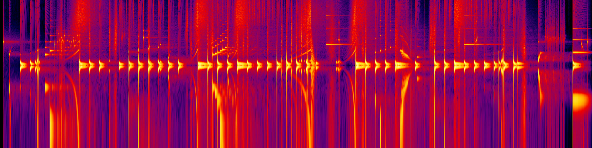
{{SPECTRO_LABELS}}Visible as designed: the accelerating bounce fill at 1–2 s; the arpeggio staircase around 10.8–11.4 s; the snare roll thickening into the tape-stop dive at 15.75 s.
The near-empty band at 16–18 s is the silence, with the glass ping ringing through it as a horizontal line. The falling bloops at 20.25 s show as descending diagonals.
Loudness: first pass −17.0 LUFS, a little shy, so I added bus drive (−15.9). Charting the energy curve for this document then showed the “silence” peaking at −9.8 LUFS, because the glass ping sits where hearing is most sensitive. The pings came down 7–10 dB. Final: {{LUFS}} LUFS integrated, {{PEAK}} dBFS peak, {{LRA}} LU range.
A 180° shutter at 60 fps is open for 1/120 s. For every frame the renderer draws the scene at 24 evenly spaced instants inside that window and averages them in 32-bit float. Fast elements smear exactly as a real camera would record them, slow ones stay sharp, and static ones are untouched. That’s 43,200 full scene renders for 1,800 frames.
In the browser, where there’s no budget for 24 renders a frame, the particle scene fakes blur with velocity streaks instead. The switch is one flag (RO.streaks).
Three browser workers render interleaved frames (0, 3, 6… / 1, 4, 7… / 2, 5, 8…) completely independently, because no frame depends on the one before it. Fonts are embedded as data so every worker lays out identical glyphs.
| Frames · sub-frames | {{FRAMES}} · {{SUBFRAMES}} |
| Shutter | 180° (1/120 s), 24 samples |
| Workers | 3 headless Chromium pages, 4 cores |
| Render wall-clock (frames) | {{RENDERMIN}} min |
| Video | H.264 High, CRF 18, yuv420p, grain-tuned |
| Audio | 48 kHz WAV → AAC 256 kb/s |
| Master size | {{MP4MB}} MB |
Resolution is not baked in. Everything is drawn in a 1920×1080 coordinate space and scaled to the canvas, so the same code renders 4K or 8K masters with no loss. The cost is render time, which scales with pixel count.